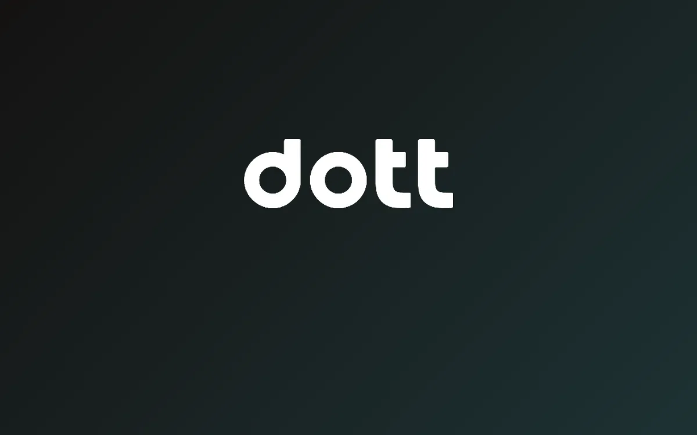

giu 2026
Analisi Strategica: Growth Marketing e Brand Positioning per Dott
Consulenza strategica di growth marketing per Dott (TIER-Dott), operatore europeo di micro-mobilità elettrica condivisa presente in oltre 400 città e 21 paesi, con più di 125 milioni di corse l'anno. Il progetto analizza mercato, competitor diretti e indiretti (Lime, Voi, Bird, Uber, trasporto pubblico) e presenza digitale su sito, app e social, per poi costruire un'analisi SWOT completa, tre buyer persona con KPI dedicati e una mappa di posizionamento su prezzo e sostenibilità.
Il cuore del lavoro è un sondaggio primario su 50 rispondenti che ribalta il problema di partenza: il prodotto è eccellente (4,7 stelle su App Store) e il prezzo è nel range giusto, ma il 62% del campione non conosce Dott. Da qui l'obiettivo SMART scelto, portare l'adozione del Minute Pass dal 12% al 22% in sei mesi, e il principio che guida tutta la roadmap: prima esisti nella testa del target, poi converti, poi fidelizzi.
Master in Growth Marketing e Agenti AI, start2impact x Unimarconi - modulo di Analisi Strategica
Scarica il progetto (PDF)